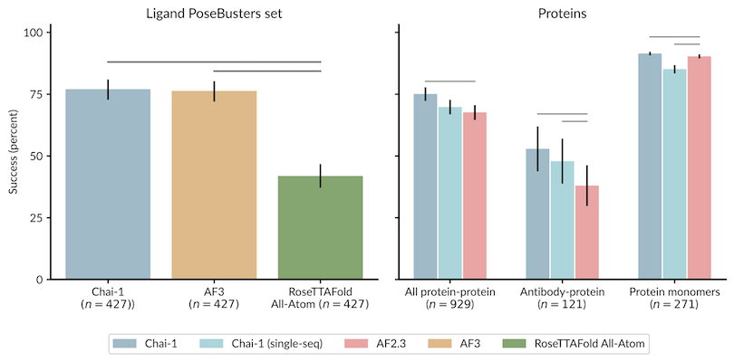
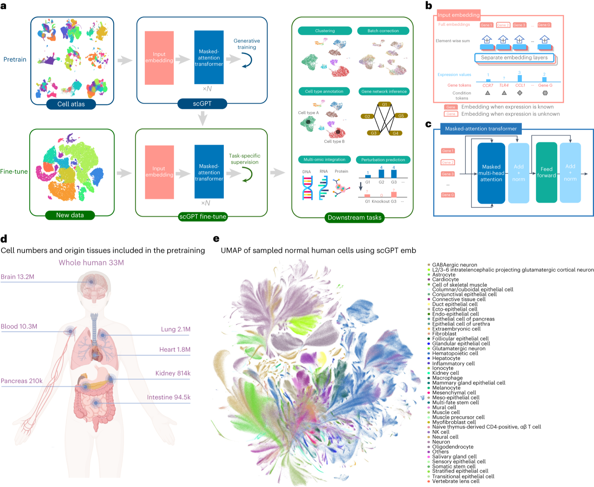
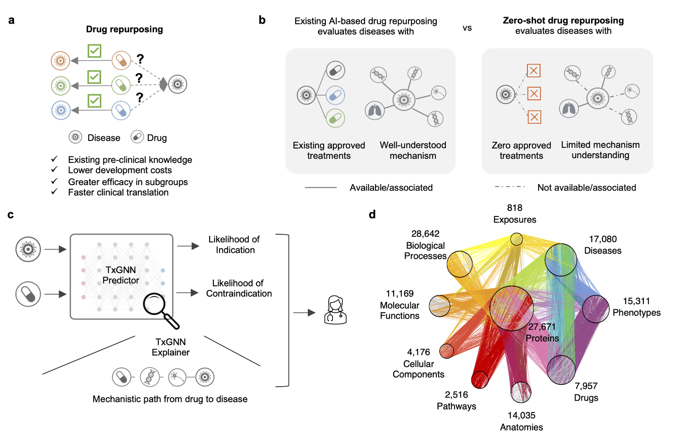
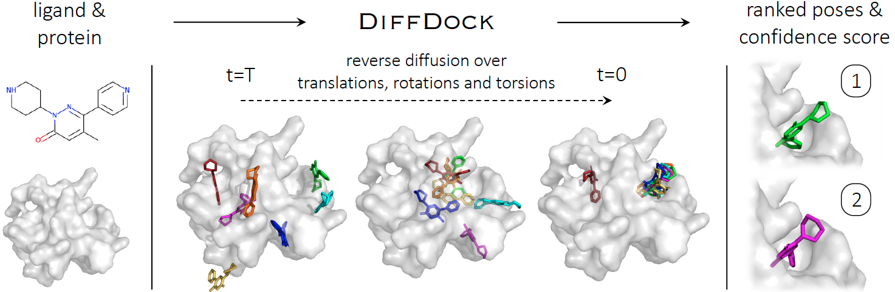
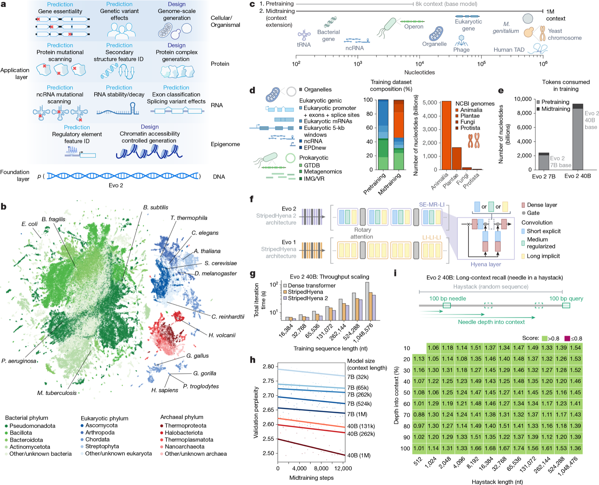
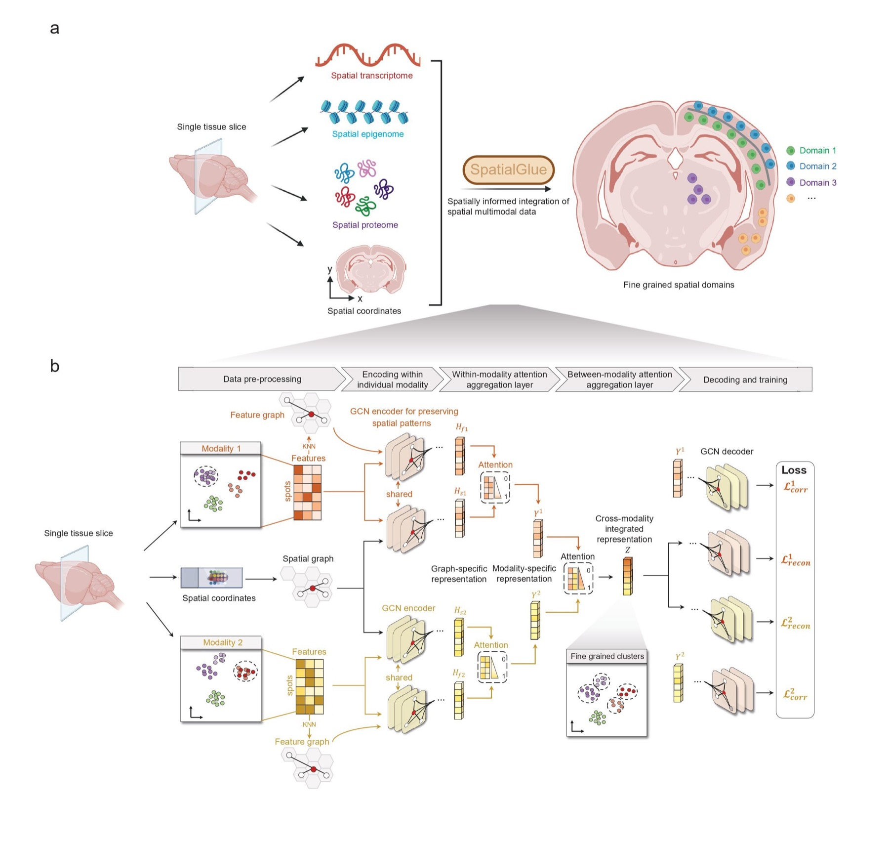
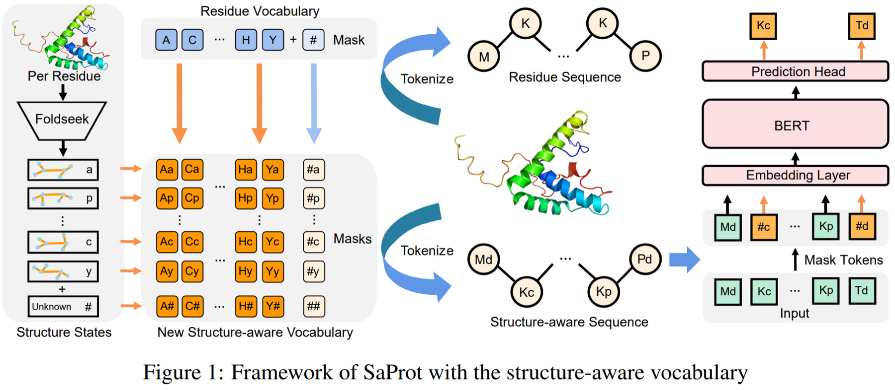

Executive Summary
00｜核心结论：模型能力增长快于验证能力
六个方向并不是六条平行赛道，而是从序列、分子、细胞到组织的多尺度建模体系。结构模型给生成模型提供几何约束，基因组与蛋白语言模型提供序列表征，单细胞与空间组学提供上下文，药物发现则把这些能力汇入真实干预。
证据最强结构预测与局部设计
任务定义清楚、监督信号强、公开基准成熟。AlphaFold 系列改变了结构推断，RFdiffusion 等开始改变蛋白设计。
潜力最大虚拟细胞与多尺度生成
训练数据已达亿级细胞，但跨细胞类型、跨扰动、跨平台的因果外推仍是决定性短板。
价值瓶颈验证吞吐而非候选生成
药物和蛋白候选越来越容易生成；湿实验、ADMET、可制造性和临床证据成为更稀缺的资源。
阅读原则：本文将“作者报告”“独立评测”“湿实验验证”“未来判断”分开呈现。一个模型在自建 benchmark 上领先，不等于它已获得跨实验室、跨分布或临床级可靠性。
作者报告论文内部数据与比较
独立评测第三方统一数据与协议
湿实验体外、体内或自动化实验
前景判断尚待验证的技术推断
Landscape
全景｜AI for Biology 正沿三层能力栈演进
第一层是预测：从序列或实验观测恢复结构、功能和状态；第二层是生成：提出满足约束的新分子、新序列或新细胞状态；第三层是闭环干预：模型选择下一轮实验，实验结果反过来更新模型。今天最成熟的是第一层，资本与研究热度集中在第二层，真正稀缺的是第三层。
2018–2026：关键里程碑
2018–2020｜任务基准与首批实验案例MoleculeNet、DeepCRISPR、GENTRL DDR1 与 Halicin 证明 ML 可以进入真实发现流程。
2021–2022｜结构与长程调控突破AlphaFold2、RoseTTAFold、Enformer、ESM-1v 将结构、调控和突变效应带入统一深度学习范式。
2023–2024｜生成模型和基础模型扩张RFdiffusion、DiffDock、Geneformer、scGPT、Evo、AlphaFold3、ESM3 让“设计”成为主线。
2025–2026｜全原子、百万上下文与虚拟细胞独立基准开始给热潮降温；Evo 2、STATE、Stack 和自动化 biofoundry 把重点推向跨上下文泛化与闭环验证。
Direction 01 · Structure & Design
01｜蛋白结构与生成式设计：从折叠求解到功能编程
AlphaFold2 解决的是“给定序列，结构是什么”；AlphaFold3 把对象扩展到蛋白、DNA、RNA、配体和离子组成的复合物；RFdiffusion 则反转问题，询问“为了某个功能，应当生成什么结构”。这是预测与设计两套技术栈的分叉点。
成熟度判断：单蛋白结构预测已经成为基础设施；全原子复合物预测快速进步；生成式蛋白设计已有越来越多湿实验命中，但成功率依赖目标、筛选体系和可制造性，尚无一个类似 CASP 的通用设计排行榜。
| 代表工作 | 核心对象 | 真正贡献 | 验证边界 | 开放性 |
|---|
| AlphaFold2 (2021) [1] | 单链/多链蛋白 | 把 CASP 级结构精度推近实验尺度 | 静态结构不等于动力学、亲和力与催化常数 | 代码开放 |
| RFdiffusion (2023) [2] | 新蛋白骨架、motif、binder | 扩散模型实现受几何约束的从头设计 | 设计成功率必须按具体湿实验任务解释 | 代码/权重 |
| AlphaFold3 (2024) [3] | 蛋白、核酸、配体、离子 | 统一全原子复合物预测 | 训练数据、化学特异性和新颖配体仍需独立评测 | 服务/受限代码 |
| RoseTTAFold All-Atom (2024) [4] | 统一生物分子体系 | 提供 AF3 之外的 all-atom 研究路线 | 不同类别任务性能不应被单一均值掩盖 | 学术开放 |
| Chai-1 (2024) [5] | 多模态复合物 | Apache 2.0 代码与权重，支持商业研究 | 官方结果仍需在新靶标和真实先导优化中检验 | 完全开放 |
| Boltz-1 / Boltz-2 (2024–2025) [41] | 复合物结构与配体亲和力 | Boltz-1 提供全开放 AF3 路线；Boltz-2 将结构与亲和力联合建模 | 亲和力精度仍依赖数据域与评测协议，不能替代实验或自由能计算 | MIT 代码/权重 |

论文/官方图｜Chai-1 technical report performance overview。来源：Chai Discovery 官方仓库。该图适合说明开放模型对 AF3 类任务的追赶，但不应被解读为所有真实药物项目中的统一排名。
预测模型与设计模型的评价标准不同
结构推断恢复是否准确
关注 lDDT、DockQ、界面精度、配体 pose、原子碰撞和置信度校准。
生成设计实验是否命中
关注 motif scaffold 成功、结合/催化活性、多样性、表达、稳定性与可制造性。
下一阶段能否联合优化
结构、亲和力、选择性、动态构象、免疫原性和生产属性必须进入同一闭环。
关键反例：高置信度结构不必然意味着正确的化学特异性；能生成稳定骨架也不必然意味着有目标功能。结构是必要的中间表征，不是终点。
Direction 02 · Foundation Models
02｜生物基础模型与虚拟细胞：规模已经到位，因果性尚未到位
Geneformer、scGPT 和 scFoundation 证明单细胞预训练表征可以跨任务迁移；Arc 的 STATE 与 Stack 则把问题重新定义为：给定细胞背景和扰动条件，能否生成未见过的响应分布。后者才是“虚拟细胞”的核心考试。

论文原图｜scGPT Figure 1：超过 3300 万细胞上的生成式预训练、任务微调与多类下游应用。它代表第一代单细胞基础模型的“预训练表征 → 任务迁移”范式，但并不能单独证明对未见扰动具有可靠的因果外推能力。点击图片可放大。来源：Cui et al., Nature Methods, 2024 [7]。
| 模型 | 公开训练规模 | 主要定位 | 需要谨慎之处 | 开放性 |
|---|
| Geneformer [6] | 约 3000 万细胞 | 基因网络与小样本迁移 | 零样本 embedding 并非稳定优于经典方法 | 权重/代码 |
| scGPT [7] | 超过 3300 万细胞 | 生成式单细胞多组学迁移 | 官方仓库仍有部分预训练/微调能力未完整产品化 | 代码/检查点 |
| scFoundation [8] | 超过 5000 万细胞，1 亿参数 | 表达、注释、药物与扰动任务 | 不同下游任务的拆分和泄漏风险需逐项检查 | 代码/权重 |
| STATE [9] | 近 1.7 亿观测 + 超 1 亿扰动细胞 | 跨上下文扰动响应 | 官方许可与外部复现范围有限 | 非商业使用 |
| Stack [10] | 1.5 亿统一预处理细胞 | in-context 生成未见细胞状态 | 2026 新工作，独立基准和湿实验验证仍待积累 | 非商业许可 |
独立评测的降温信号：Geneformer/scGPT 的零样本细胞表示在多数据集上并不稳定超过 HVG、scVI 或 Harmony；扰动预测研究也反复发现，深度模型在严格的 unseen-perturbation 设定下可能不胜简单线性或均值基线 [11][12]。
模型之外：数据与评测基础设施
DataVirtual Cell Atlas
Arc Institute 与测序平台合作建设标准化的大规模观测和扰动单细胞资源。其关键价值不是再堆一个细胞总数，而是统一实验元数据、质量控制与可用于跨上下文学习的扰动数据。
BenchmarkVirtual Cell Challenge [43]
把“由基础状态预测扰动后细胞状态”转化为公开任务。真正有区分度的协议应同时考察未见细胞背景、未见扰动、分布恢复和生物学效应，而不只比较平均表达重建误差。
未来三项硬指标
外推组合泛化
同时面对未见 donor、cell type、perturbation 和 batch，而不是只缺一个维度。
分布恢复异质性
预测完整细胞状态分布、稀有亚群和时序轨迹，而不只是平均表达变化。
决策主动实验
模型应能提出最能降低不确定性的下一轮实验，而不是被动输出一个矩阵。
Direction 03 · Drug Discovery
03｜AI 驱动药物发现：候选越来越多，证据链仍然稀缺
AI 药物发现不是一条单模型流水线，而是靶点识别、分子生成、虚拟筛选、三维 pose、性质预测、ADMET、合成与实验验证的组合系统。任一环节的误差都会在后续被放大。

论文/官方图｜TxGNN Figure 1。模型在包含 17,080 种疾病和 7,957 个治疗候选的知识图谱上进行零样本适应症/禁忌症推断。来源：TxGNN 官方仓库 [15]。

论文/官方图｜DiffDock overview。它生成蛋白–配体结合 pose 与置信度，但官方明确说明该置信度不是结合亲和力。来源：DiffDock 官方仓库 [16]。
| 环节 | 代表工作 | 已证明的价值 | 未解决的风险 |
|---|
| 实验型发现案例 | GENTRL DDR1 [13]、Halicin [14] | 缩短 hit generation；从巨大分子库发现非直觉候选 | 单案例不能外推到整体临床成功率 |
| 药物重定位 | TxGNN [15] | 在无已知治疗的疾病上做零样本排序与解释 | 知识图谱偏差、因果方向和临床可行动性 |
| 三维表征/对接 | Uni-Mol、DiffDock-L、DynamicBind [16][17] | 更强的 3D 表征、blind docking 与诱导契合建模 | pose、affinity、selectivity 是不同任务 |
| ADMET | ADMET-AI [18] | 快速筛选多个药代与毒理终点 | 新化学空间上的分布漂移与校准 |
| 公共基础设施 | MoleculeNet、TDC [19][20] | 统一数据、划分、任务与指标 | benchmark 提升不等于项目真实成功率 |
| 独立结构基准 | PoseBench [42] | 统一比较 fixed-protein docking、flexible docking 与 co-folding | 新序列、多配体、化学特异性与物理合理性仍是共同难点 |
最常见的概念偷换：“pose 更准”不等于“亲和力更准”，“性质预测更准”不等于“可成药”，“生成新颖”也不等于“可合成、可选择、可安全进入人体”。PoseBench 还说明，结构命中率必须与化学特异性、碰撞和多配体完整性一起检查 [42]。
真正的端到端系统应如何闭环
Direction 04 · Genomic Language Models
04｜DNA 与基因组语言模型：从局部 motif 到百万碱基上下文
DNABERT 把基因组当作语言，Enformer 强化长程调控建模，Nucleotide Transformer 系统研究参数和物种规模，Evo/Evo 2 则进一步统一单碱基分辨率的预测与生成。到 2026 年，问题已从“能否学到序列语法”转向“生成的序列能否在细胞中按预期工作”。

论文原图｜Evo 2 Figure 1：概括跨 DNA、RNA、蛋白质与表观基因组的预测和设计任务，并展示 8.8 万亿 token 的 OpenGenome2、StripedHyena 2 架构及最长 100 万碱基上下文实验。相比原先的项目封面图，这张图能直接支撑正文中的数据规模、架构和长上下文判断。点击图片可放大。来源：Brixi et al., Nature, 2026 [25]。
| 模型 | 上下文/规模 | 优势任务 | 关键限制 |
|---|
| DNABERT [21] | 局部 k-mer | promoter、splice、TFBS 分类 | tokenization 与跨物种迁移有限 |
| Enformer [22] | 约 100 kb 级输入 | 表达与染色质状态、远程调控 | 变异方向性和个体差异仍不充分 |
| DNABERT-2 [23] | BPE + 多物种 | 工程效率、GUE 基准 | 不同任务领先模型不同 |
| Nucleotide Transformer [24] | 50M–2.5B 参数，数千基因组 | 低数据迁移、变异优先级 | 参数放大并非所有任务都单调增益 |
| Evo 2 [25] | 8.8T token，最长 1M bp | 跨生命域生成、变异效应、基因组设计 | 大规模生成的功能、安全与生态风险需实验审计 |
| DNA-Diffusion [26] | 200 bp 调控元件 | 细胞类型特异 enhancer 生成 | 局部 reporter 活性不等同于原位调控 |
不存在统一“最佳 DNA 模型”：独立零样本基准显示，splice site、表观修饰、人类基因组分类和超长序列扩展性由不同模型占优 [27]。模型选择必须从任务、序列长度、物种与评测协议出发。
Predict变异效应
零样本 likelihood 能否与致病性、表达改变或适应度一致。
Generate调控元件与基因组
生成序列是否具有目标细胞类型、时空与剂量特异性。
Govern生物安全
长序列生成带来双重用途、生态释放和不可逆干预问题。
Direction 05 · Single-cell & Spatial
05｜单细胞与空间组学：为细胞增加坐标、邻居和组织语境
单细胞 RNA-seq 告诉我们“细胞是谁”，空间组学进一步回答“它在哪里、旁边是谁、组织结构如何约束它”。这个方向的目标不是再提高一个聚类分数，而是建立可跨平台、跨组织、跨尺度查询的人体细胞地图。

论文/官方图｜SpatialGlue workflow。模型先在每个组学内部融合表达与空间邻域，再通过 cross-omics attention 对齐多模态。论文覆盖 5 个模拟和 12 个实验数据集。来源：SpatialGlue 官方仓库 [29]。
| 任务 | 代表工作 | 输入 | 关键判断 |
|---|
| 参考图谱 | Human Cell Atlas [28] | 跨器官、跨人群多模态细胞数据 | 核心价值是公共坐标系与数据标准，不是单一模型 |
| 空间域/SVG | SpaGCN、独立 benchmark [30] | 表达 + 坐标 + 组织图像 | 无单一方法在所有平台和分辨率通吃 |
| 空间多组学 | SpatialGlue [29] | 转录–蛋白或表观–转录 | 图结构与跨组学注意力提高域解析，但依赖邻接定义 |
| 空间基础模型 | Nicheformer [31] | dissociated + targeted spatial | 把微环境纳入表征，仍需跨技术平台验证 |
| 图像推断表达 | Hist2ST、THItoGene、GHIST [32] | H&E → 空间表达 | 从 spot 走向 single-cell，但染色差异和组织迁移困难 |
独立基准的共同结论：复杂网络不自然等于更强。空间域/SVG 方法对平台和分辨率高度敏感；histology-to-expression 中，统一协议下的简单强基线可能超过更华丽的模型 [30][33]。
“人体 Google Maps”需要四层坐标
Identity细胞身份
类型、状态、克隆与发育谱系。
Space空间邻域
细胞接触、组织结构与分子梯度。
Time动态轨迹
疾病进展、治疗前后与时序扰动。
Function分子功能
基因调控、蛋白活性、代谢状态与细胞间信号。
Direction 06 · Protein Language & Engineering
06｜蛋白语言模型与酶工程：从序列统计走向自动化进化
ESM 系列证明序列预训练可以学到结构与功能信息；SaProt 把结构 token 显式加入词表；ProGen2 与 ESM3 走向可控生成；PLMeAE 等系统则把模型评分接入自动化 biofoundry。决定产业价值的，不是模型能生成多少序列，而是每轮实验能提升多少目标功能。

论文/官方图｜SaProt pipeline。SaProt 使用 amino acid + 3Di 结构感知词表；官方也明确提示，早期 35M/650M 模型在只有氨基酸序列时不应直接当作冻结 embedding 使用。来源：SaProt 官方仓库 [36]。
| 路线 | 代表工作 | 能力 | 证据强度 |
|---|
| 零样本功能 | ESM-1v、ProteinGym [34][35] | 用序列 likelihood 预测突变效应 | 公开 DMS 基准强；多突变和工业条件仍难 |
| 结构感知表示 | SaProt [36] | AA + 3Di token 融合序列与结构 | 多任务与 ProteinGym 强；输入结构质量会传导 |
| 自回归生成 | ProtGPT2、ProGen2 [37] | 生成新颖且符合天然统计的序列 | 计算指标充分，统一湿实验 benchmark 不足 |
| 多模态生成 | ESM3 [38] | 联合 sequence、structure、function 提示 | 已有功能蛋白展示，仍需更广泛独立实验 |
| 自动化进化 | PLMeAE [39] | ESM 评分接入 DBTL 自动平台 | 方向最接近生产闭环，但可迁移性待积累 |
| 抗体生成 | IgLM、PALM-H3 [40] | CDR infilling 与抗原特异生成 | developability、免疫原性和多靶标外推不足 |
最值得下注的形态：语言模型不是替代定向进化，而是改变定向进化的候选选择策略。最强系统会联合零样本先验、少量实验监督、主动学习和自动化构建/测定。
Cross-field Comparison
横向比较｜六个方向处在不同的“科学可验证性”阶段
下面的评分是研究判断，不是客观排行榜：每项以 1–5 个点表示相对成熟度。数据规模大并不意味着因果性强，公开性高也不意味着真实转化已经完成。
| 方向 | 数据规模 | 基准成熟 | 因果监督 | 湿实验闭环 | 开放复现 | 当前瓶颈 |
|---|
| 结构与蛋白设计 | ●●●●○ | ●●●●● | ●●○○○ | ●●●●○ | ●●●●○ | 动态、亲和力与多目标设计 |
| 虚拟细胞 | ●●●●● | ●●○○○ | ●●○○○ | ●●○○○ | ●●●○○ | 组合外推与分布预测 |
| AI 药物发现 | ●●●●○ | ●●●○○ | ●●○○○ | ●●●○○ | ●●●○○ | ADMET、合成与临床转化 |
| 基因组语言模型 | ●●●●● | ●●●○○ | ●●○○○ | ●●○○○ | ●●●●○ | 长程序列的功能与安全验证 |
| 空间组学 | ●●●○○ | ●●●○○ | ●●○○○ | ●●○○○ | ●●●●○ | 跨平台、标签与分辨率 |
| 蛋白 LM / 酶工程 | ●●●●● | ●●●●○ | ●●○○○ | ●●●●○ | ●●●●○ | 多突变、可制造性与实验吞吐 |
跨方向共识：表现最稳健的任务都有明确输入输出、强监督信号、合理数据拆分和短实验反馈；最难的任务则同时包含分布漂移、隐藏混杂、多尺度状态与昂贵反馈。
Open Problems
研究空白与未来判断：从会生成到会承担证据责任
01基准外泛化
按时间、实验室、物种、细胞类型、靶标家族和化学骨架拆分，而不是随机拆分。
02因果与反事实
增加扰动、剂量、时序和负结果，使模型学习“改变什么会导致什么”。
03不确定性校准
模型必须知道何时不该给出强结论，并把不确定性转化为实验优先级。
04负结果基础设施
失败的合成、无活性分子、无效突变和实验噪声不能继续从数据集中消失。
05开放与治理
模型权重、训练数据、许可证和双重用途政策共同决定社区能否复现和安全使用。
06主动科学闭环
下一代系统的指标应是单位成本的信息增益、命中率和真实研发周期，而非单一 benchmark。
未来 3–5 年最值得跟踪的交叉点
结构模型 × 蛋白 LM联合序列、结构、功能和 developability 的多目标蛋白生成。
Virtual Cell × Spatial Omics在组织坐标和细胞邻域中模拟药物/基因扰动，而非孤立细胞。
Genome LM × 自动化合成生物学生成调控网络、元件组合甚至长基因组片段，并用高通量实验校准。
Drug AI × Robotics合成、筛选、ADMET 与主动学习形成连续机器闭环，记录全部阴性结果。
最终判断：AI for Biology 的下一次质变不会只来自更大的模型，而会来自更好的实验接口。能够提出候选的模型很多；能够解释证据、校准风险、选择实验并从失败中学习的系统仍然很少。
References
参考文献与官方资源
- Jumper et al. Highly accurate protein structure prediction with AlphaFold. Nature, 2021.
- Watson et al. De novo design of protein structure and function with RFdiffusion. Nature, 2023.
- Abramson et al. Accurate structure prediction of biomolecular interactions with AlphaFold 3. Nature, 2024.
- Krishna et al. Generalized biomolecular modeling and design with RoseTTAFold All-Atom. Science, 2024.
- Chai Discovery. Chai-1 official repository and technical report.
- Theodoris et al. Transfer learning enables predictions in network biology. Nature, 2023/2024.
- Cui et al. scGPT: toward building a foundation model for single-cell multi-omics. Nature Methods, 2024.
- Hao et al. Large-scale foundation model on single-cell transcriptomics. Nature Methods, 2024.
- Arc Institute. STATE manuscript and model information, 2025.
- Arc Institute. Stack: in-context learning of single-cell biology, 2026.
- Zero-shot evaluation of single-cell foundation model embeddings. Genome Biology, 2025.
- Independent benchmarking of single-cell perturbation prediction models. Nature Machine Intelligence, 2025.
- Zhavoronkov et al. Deep learning enables rapid identification of potent DDR1 kinase inhibitors. Nature Biotechnology, 2019.
- Stokes et al. A Deep Learning Approach to Antibiotic Discovery. Cell, 2020.
- Huang et al. A foundation model for clinician-centered drug repurposing. Nature Medicine, 2024.
- Corso et al. DiffDock and DiffDock-L official repository.
- Lu et al. DynamicBind for ligand-specific protein structure prediction. Nature Communications, 2024.
- Swanson et al. ADMET-AI. Bioinformatics, 2024.
- MoleculeNet benchmark.
- Therapeutics Data Commons official repository.
- Ji et al. DNABERT. Bioinformatics, 2021.
- Avsec et al. Effective gene expression prediction from sequence by integrating long-range interactions. Nature Methods, 2021.
- DNABERT-2 official repository and GUE benchmark.
- Dalla-Torre et al. Nucleotide Transformer. Nature Methods, 2025.
- Brixi et al. Genome modelling and design across all domains of life with Evo 2. Nature, 2026.
- DNA-Diffusion official repository.
- Zero-shot benchmarking of DNA foundation models. Nature Communications, 2025.
- Human Cell Atlas official project.
- Long et al. SpatialGlue. Nature Methods, 2024.
- Benchmarking spatial domains and domain-specific SVG methods. NAR, 2025.
- Nicheformer. Nature Methods, 2025.
- GHIST official repository.
- Benchmarking spatial gene expression prediction from histology. Nature Communications, 2025.
- Meier et al. Language models enable zero-shot prediction of mutation effects. NeurIPS, 2021.
- ProteinGym official benchmark and repository.
- Su et al. SaProt official repository.
- Ferruz et al. ProtGPT2. Nature Communications, 2022; see also ProGen2 official resources.
- Hayes et al. Simulating 500 million years of evolution with a language model. Science, 2025.
- PLMeAE automatic biofoundry integration repository.
- IgLM official repository; see also PALM-H3 official repository.
- Wohlwend et al. Boltz-1 and Passaro et al. Boltz-2 official repository, model weights and technical reports.
- Morehead et al. Assessing the potential of deep learning for protein-ligand docking. Nature Machine Intelligence, 2025; PoseBench official repository.
- Virtual Cell Challenge official site; public evaluation infrastructure for single-cell perturbation response prediction.
引用说明：数字与性能结论优先引用论文原文或官方仓库；“最佳”仅表示特定公开任务与评测协议内的结果。本文不把厂商宣传、搜索摘要或未经核验的二手排名当作强证据。